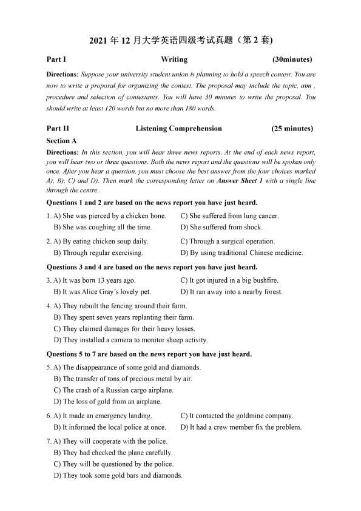
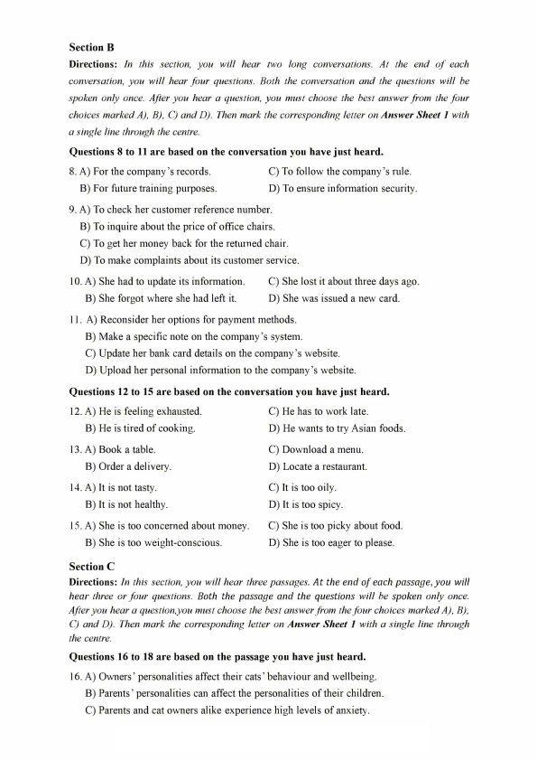
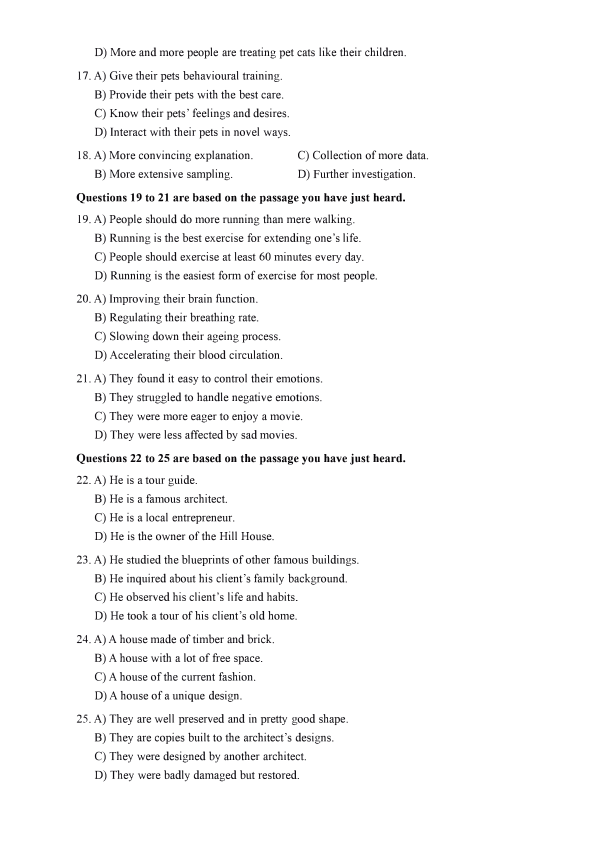
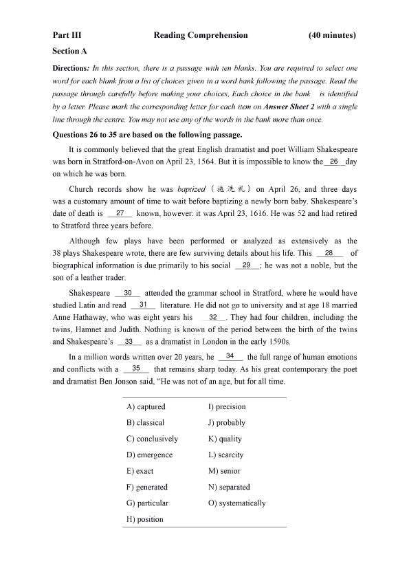
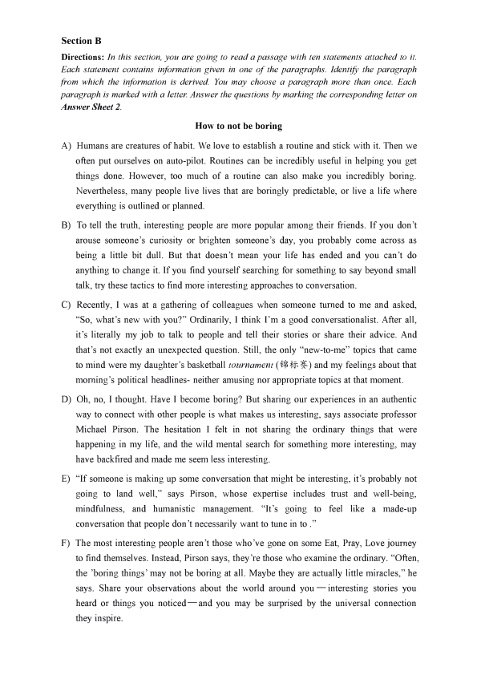
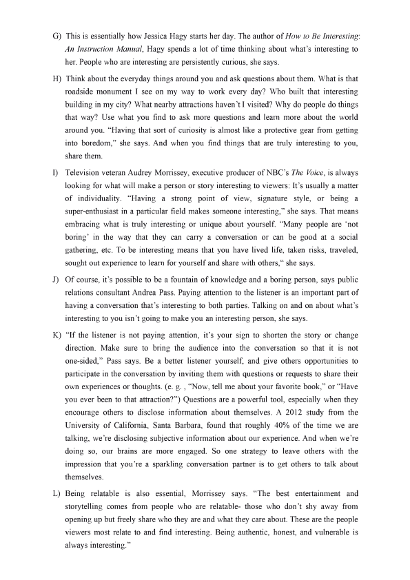
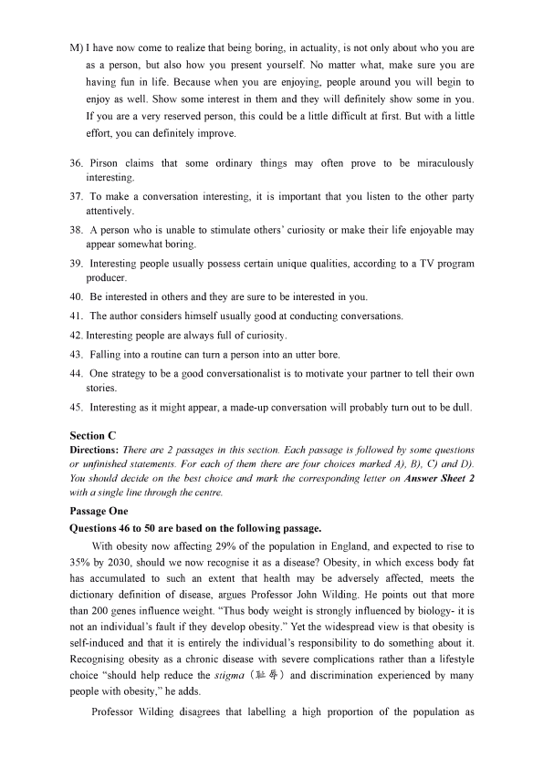
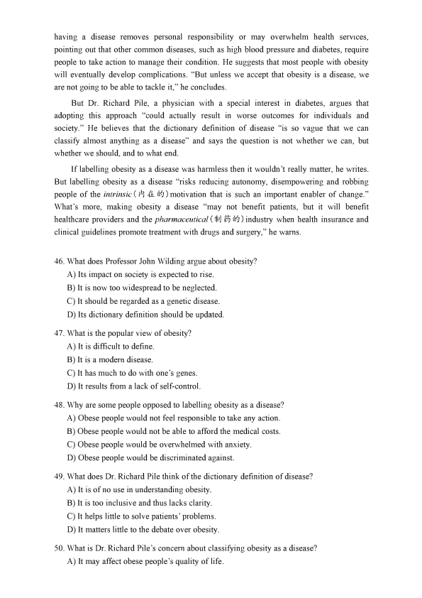
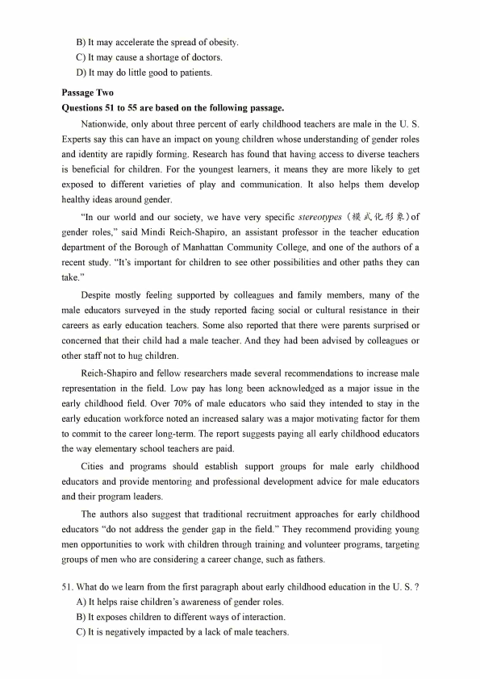
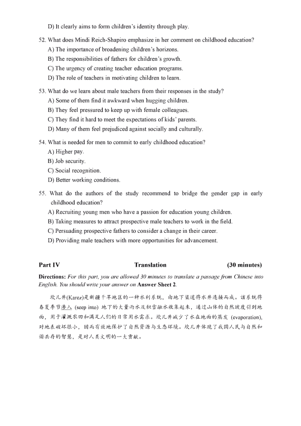

第 1 / 10 页

2021年12月大学英语四级考试真题（第2套）
Part I
Writing
(30minutes)
Directions: Suppose your university student union is planning to hold a speech contest. You are
now to write a proposal for organizing the contest. The proposal may include the topic, aim ,
procedure and selection of contestants. You will have 30 minutes to write the proposal. You
should write at least 120 words but no more than 180 words.
Part II
Section A
Listening Comprehension
(25 minutes)
Directions: In this section, you will hear three news reports. At the end of each news report,
you will hear two or three questions. Both the news report and the questions will be spoken only
once. After you hear a question, you must choose the best answer from the four choices marked
AJ, BJ, CJ and DJ. Then mark the corresponding letter on Answer Sheet 1 with a single line
through the centre.
Questions 1 and 2 are based on the news report you have just heard.
1. A) She was pierced by a chicken bone.
B) She was coughing all the time.
2. A) By eating chicken soup daily
B) Through regular exercising
C) She suffered from lung cancer.
D) She suffered from shock.
C) Through a surgical operation
D) By using traditional Chinese medicine.
Questions 3 and 4 are based on the news report you have just heard.
3. A) It was born 13 years ago.
C) It got injured in a big bushfire.
B) It was Alice Gray's lovely pet.
D) It ran away into a nearby forest
4. A) They rebuilt the fencing around their farm.
B) They spent seven years replanting their farm
C) They claimed damages for their heavy losses
D) They installed a camera to monitor sheep activity.
Questions 5 to 7 are based on the news report you have just heard.
5. A) The disappearance of some gold and diamonds.
B) The transfer of tons of precious metal by air
C) The crash of a Russian cargo airplane.
D) The loss of gold from an airplane.
6. A) It made an emergency landing.
C) It contacted the goldmine company
B) It infom记d the local police at once.
D) It had a crew member fix the problem.
7. A) They will cooperate with the police
B) They had checked the plane carefully
C) They will be questioned by the police
D) They took some gold bars and diamonds
查看 / 复制本页文字
2021年12月大学英语四级考试真题（第2套） Part I Writing (30minutes) Directions: Suppose your university student union is planning to hold a speech contest. You are now to write a proposal for organizing the contest. The proposal may include the topic, aim , procedure and selection of contestants. You will have 30 minutes to write the proposal. You should write at least 120 words but no more than 180 words. Part II Section A Listening Comprehension (25 minutes) Directions: In this section, you will hear three news reports. At the end of each news report, you will hear two or three questions. Both the news report and the questions will be spoken only once. After you hear a question, you must choose the best answer from the four choices marked AJ, BJ, CJ and DJ. Then mark the corresponding letter on Answer Sheet 1 with a single line through the centre. Questions 1 and 2 are based on the news report you have just heard. 1. A) She was pierced by a chicken bone. B) She was coughing all the time. 2. A) By eating chicken soup daily B) Through regular exercising C) She suffered from lung cancer. D) She suffered from shock. C) Through a surgical operation D) By using traditional Chinese medicine. Questions 3 and 4 are based on the news report you have just heard. 3. A) It was born 13 years ago. C) It got injured in a big bushfire. B) It was Alice Gray's lovely pet. D) It ran away into a nearby forest 4. A) They rebuilt the fencing around their farm. B) They spent seven years replanting their farm C) They claimed damages for their heavy losses D) They installed a camera to monitor sheep activity. Questions 5 to 7 are based on the news report you have just heard. 5. A) The disappearance of some gold and diamonds. B) The transfer of tons of precious metal by air C) The crash of a Russian cargo airplane. D) The loss of gold from an airplane. 6. A) It made an emergency landing. C) It contacted the goldmine company B) It infom记d the local police at once. D) It had a crew member fix the problem. 7. A) They will cooperate with the police B) They had checked the plane carefully C) They will be questioned by the police D) They took some gold bars and diamonds
第 2 / 10 页

Section B
Directions: In this section, you will hear two long conversations. At the end of each
conversation, you will hear four questions. Both the conversation and the questions will be
spoken only once. After you hear a question, you must choose the best answer from the four
choices marked A), BJ, C) and D). Then mark the corresponding letter on Answer Sheet 1 with
a single line through the centre.
Questions 8 to 11 are based on the conversation you have just heard.
8. A) For the company's records.
C) To follow the company's rule
B) For future training purposes.
D) To ensure information security.
9. A) To check her customer reference number.
B) To inquire about the price of office chairs.
C) To get her money back for the returned chair.
D) To make complaints about its customer service.
10. A) She had to update its information.
C) She lost it about three days ago.
B) She forgot where she had left it.
D) She was issued a new card.
11. A) Reconsider her options for payment methods
B) Make a specific note on the company's system.
C) Update her bank card details on the company's website.
D) Upload her personal information to the company's website.
Questions 12 to 15 are based on the conversation you have just heard.
12. A) He is feeling exhausted.
C) He has to work late.
B) He is tired of cooking.
D) He wants to try Asian foods.
13. A) Book a table.
C) Download a menu.
B) Order a delivery.
D) Locate a restaurant.
14. A) It is not tasty.
C) It is too oily.
B) It is not healthy.
D) It is too spicy.
15. A) She is too concerned about money.
C) She is too picky about food.
B) She is too weight-conscious.
D) She is too eager to please
Section C
Directions: In this section, you will hear three passages. At the end of each passage, you will
hear three or four questions. Both the passage and the questions will be spoken only once
After you hear a question,you must choose the best answer from the four choices marked A), B),
C) and D). Then mark the corresponding letter on Answer Sheet 1 with a single line through
the centre.
Questions 16 to 18 are based on the passage you have just heard.
16. A) Owners' personalities affect their cats' behaviour and wellbeing.
B) Parents' personalities can affect the personalities of their children.
C) Parents and cat owners alike experience high levels of anxiety
查看 / 复制本页文字
Section B Directions: In this section, you will hear two long conversations. At the end of each conversation, you will hear four questions. Both the conversation and the questions will be spoken only once. After you hear a question, you must choose the best answer from the four choices marked A), BJ, C) and D). Then mark the corresponding letter on Answer Sheet 1 with a single line through the centre. Questions 8 to 11 are based on the conversation you have just heard. 8. A) For the company's records. C) To follow the company's rule B) For future training purposes. D) To ensure information security. 9. A) To check her customer reference number. B) To inquire about the price of office chairs. C) To get her money back for the returned chair. D) To make complaints about its customer service. 10. A) She had to update its information. C) She lost it about three days ago. B) She forgot where she had left it. D) She was issued a new card. 11. A) Reconsider her options for payment methods B) Make a specific note on the company's system. C) Update her bank card details on the company's website. D) Upload her personal information to the company's website. Questions 12 to 15 are based on the conversation you have just heard. 12. A) He is feeling exhausted. C) He has to work late. B) He is tired of cooking. D) He wants to try Asian foods. 13. A) Book a table. C) Download a menu. B) Order a delivery. D) Locate a restaurant. 14. A) It is not tasty. C) It is too oily. B) It is not healthy. D) It is too spicy. 15. A) She is too concerned about money. C) She is too picky about food. B) She is too weight-conscious. D) She is too eager to please Section C Directions: In this section, you will hear three passages. At the end of each passage, you will hear three or four questions. Both the passage and the questions will be spoken only once After you hear a question,you must choose the best answer from the four choices marked A), B), C) and D). Then mark the corresponding letter on Answer Sheet 1 with a single line through the centre. Questions 16 to 18 are based on the passage you have just heard. 16. A) Owners' personalities affect their cats' behaviour and wellbeing. B) Parents' personalities can affect the personalities of their children. C) Parents and cat owners alike experience high levels of anxiety
第 3 / 10 页

D) More and more people are treating pet cats like their children.
17. A) Give their pets behavioural training
B) Provide their pets with the best care.
C) Know their pets' feelings and desires.
D) Interact with their pets in novel ways
18. A) More convincing explanation
C) Collection of more data.
B) More extensive sampling.
D) Further investigation.
Questions 19 to 21 are based on the passage you have just heard.
19. A) People should do more running than mere walking
B) Running is the best exercise for extending one's life.
C) People should exercise at least 60 minutes every day.
D) Running is the easiest form of exercise for most people.
20. A) Improving their brain function.
B) Regulating their breathing rate
C) Slowing down their ageing process
D) Accelerating their blood circulation.
21. A) They found it easy to control their emotions.
B) They struggled to handle negative emotions
C) They were more eager to enjoy a movie.
D) They were less affected by sad movies.
Questions 22 to 25 are based on the passage you have just heard.
22. A) He is a tour guide.
B) He is a famous architect.
C) He is a local entrepreneur.
D) He is the owner of the Hill House.
23. A) He studied the blueprints of other famous buildings
B) He inquired about his client's family background.
C) He observed his client's life and habits.
D) He took a tour of his client's old home.
24. A) A house made of timber and brick.
B) A house with a lot of free space.
C) A house of the current fashion.
D) A house of a unique design
25. A) They are well preserved and in pretty good shape
B) They are copies built to the architect's designs.
C) They were designed by another architect.
D) They were badly damaged but restored.
查看 / 复制本页文字
D) More and more people are treating pet cats like their children. 17. A) Give their pets behavioural training B) Provide their pets with the best care. C) Know their pets' feelings and desires. D) Interact with their pets in novel ways 18. A) More convincing explanation C) Collection of more data. B) More extensive sampling. D) Further investigation. Questions 19 to 21 are based on the passage you have just heard. 19. A) People should do more running than mere walking B) Running is the best exercise for extending one's life. C) People should exercise at least 60 minutes every day. D) Running is the easiest form of exercise for most people. 20. A) Improving their brain function. B) Regulating their breathing rate C) Slowing down their ageing process D) Accelerating their blood circulation. 21. A) They found it easy to control their emotions. B) They struggled to handle negative emotions C) They were more eager to enjoy a movie. D) They were less affected by sad movies. Questions 22 to 25 are based on the passage you have just heard. 22. A) He is a tour guide. B) He is a famous architect. C) He is a local entrepreneur. D) He is the owner of the Hill House. 23. A) He studied the blueprints of other famous buildings B) He inquired about his client's family background. C) He observed his client's life and habits. D) He took a tour of his client's old home. 24. A) A house made of timber and brick. B) A house with a lot of free space. C) A house of the current fashion. D) A house of a unique design 25. A) They are well preserved and in pretty good shape B) They are copies built to the architect's designs. C) They were designed by another architect. D) They were badly damaged but restored.
第 4 / 10 页

Part III
Section A
Reading Comprehension
(40 minutes)
Directions: In this section, there is a passage with ten blanks. You are required to select one
word for each blank from a list of choices given in a word bank following the passage. Read the
passage through carefully before making your choices, Each choice in the bank
is identified
by a letter. Please mark the corresponding letter for each item on Answer Sheet 2 with a single
line through the centre. You may not use any of the words in the bank more than once.
Questions 26 to 35 are based on the following passage.
It is commonly believed that the great English dramatist and poet William Shakespeare
was born in Stratford-on-Avon on April 23, 1564. But it is impossible to know the__lLday
on which he was born.
Church records show he was baptized (施洗礼）on April 26, and three days
was a customary amount of time to wait before baptizing a newly born baby. Shakespeare's
date of death is ___]]__ known, however: it was April 23, 1616. He was 52 and had retired
to Stratford three years before.
Although few plays have been performed or analyzed as extensively as the
38 plays Shakespeare wrote, there are few surviving details about his life. This ____2_L_ of
biographical information is due primarily to his social __12__; he was not a noble, but the
son of a leather trader.
Shakespeare _J_Q_ attended the grammar school in Stratford, where he would have
studied Latin and read ____ll_ literature. He did not go to university and at age 18 married
Anne Hathaway, who was eight years his ____J_L. They had four children, including the
twins, Hamnet and Judith. Nothing is known of the period between the birth of the twins
and Shakespeare's ___ll_ as a dramatist in London in the early 1590s.
In a m仆lion words written over 20 years, he ___lL_ the full range of human emotions
and conflicts with a ____]_L that remains sharp today. As his great contemporary the poet
and dramatist Ben Jonson said, "He was not of an age, but for all time.
A) captured
I) precision
B) classical
J) probably
C) conclusively
K) quality
D) emergence
L) scarcity
E) exact
M) senior
F) generated
N) separated
G) particular
0) systematically
H) position
26
27
28
29
30
31
32
33
34
35
查看 / 复制本页文字
Part III Section A Reading Comprehension (40 minutes) Directions: In this section, there is a passage with ten blanks. You are required to select one word for each blank from a list of choices given in a word bank following the passage. Read the passage through carefully before making your choices, Each choice in the bank is identified by a letter. Please mark the corresponding letter for each item on Answer Sheet 2 with a single line through the centre. You may not use any of the words in the bank more than once. Questions 26 to 35 are based on the following passage. It is commonly believed that the great English dramatist and poet William Shakespeare was born in Stratford-on-Avon on April 23, 1564. But it is impossible to know the__lLday on which he was born. Church records show he was baptized (施洗礼）on April 26, and three days was a customary amount of time to wait before baptizing a newly born baby. Shakespeare's date of death is ___]]__ known, however: it was April 23, 1616. He was 52 and had retired to Stratford three years before. Although few plays have been performed or analyzed as extensively as the 38 plays Shakespeare wrote, there are few surviving details about his life. This ____2_L_ of biographical information is due primarily to his social __12__; he was not a noble, but the son of a leather trader. Shakespeare _J_Q_ attended the grammar school in Stratford, where he would have studied Latin and read ____ll_ literature. He did not go to university and at age 18 married Anne Hathaway, who was eight years his ____J_L. They had four children, including the twins, Hamnet and Judith. Nothing is known of the period between the birth of the twins and Shakespeare's ___ll_ as a dramatist in London in the early 1590s. In a m仆lion words written over 20 years, he ___lL_ the full range of human emotions and conflicts with a ____]_L that remains sharp today. As his great contemporary the poet and dramatist Ben Jonson said, "He was not of an age, but for all time. A) captured I) precision B) classical J) probably C) conclusively K) quality D) emergence L) scarcity E) exact M) senior F) generated N) separated G) particular 0) systematically H) position 26 27 28 29 30 31 32 33 34 35
第 5 / 10 页

Section B
Directions: In this section, you are going to read a passage with ten statements attached to it
Each statement contains information given in one of the paragraphs. Identify the paragraph
from which the information is derived. You may choose a paragraph more than once. Each
paragraph is marked with a letter. Answer the questions by marking the corresponding letter on
Answer Sheet 2.
How to not be boring
A) Humans are creatures of habit. We love to establish a routine and stick with it. Then we
often put ourselves on auto-pilot. Routines can be incredibly useful in helping you get
things done. However, too much of a routine can also make you incredibly boring.
Nevertheless, many people live lives that are boringly predictable, or live a life where
everything is outlined or planned.
B) To tell the truth, interesting people are more popular among their friends. If you don't
arouse someone's curiosity or brighten someone's day, you probably come across as
being a little bit dull. But that doesn't mean your life has ended and you can't do
anything to change it. If you find yourself searching for something to say beyond small
talk, try these tactics to find more interesting approaches to conversation.
C) Recently, I was at a gathering of colleagues when someone turned to me and asked,
"So, what's new with you?" Ordinarily, I think I'm a good conversationalist. After all,
it's literally my job to talk to people and tell their stories or share their advice. And
that's not exactly an unexpected question. Still, the only "new-to-me" topics that came
to mind were my daughter's basketball tournament（锦标赛）and my feelings about that
morning's political headlines- neither amusing nor appropriate topics at that moment
D) Oh, no, I thought. Have I become boring? But sharing our experiences in an authentic
way to connect with other people is what makes us interesting, says associate professor
Michael Pirson. The hesitation I felt in not sharing the ordinary things that were
happening in my life, and the wild mental search for something more interesting, may
have backfired and made me seem less interesting.
E) "If someone is making up some conversation that might be interesting, it's probably not
going to land well," says Pirson, whose expertise includes trust and well-being,
mindfulness, and humanistic management. "It's going to feel like a made-up
conversation that people don't necessarily want to tune in to ."
F) The most interesting people aren't those who've gone on some Eat, Pray, Love journey
to find themselves. Instead, Pirson says, they're those who examine the ordinary. "Often,
the 'boring things' may not be boring at all. Maybe they are actually little miracles," he
says. Share your observations about the world around you — interesting stories you
heard or things you noticed—and you may be surprised by the universal connection
they inspire.
查看 / 复制本页文字
Section B Directions: In this section, you are going to read a passage with ten statements attached to it Each statement contains information given in one of the paragraphs. Identify the paragraph from which the information is derived. You may choose a paragraph more than once. Each paragraph is marked with a letter. Answer the questions by marking the corresponding letter on Answer Sheet 2. How to not be boring A) Humans are creatures of habit. We love to establish a routine and stick with it. Then we often put ourselves on auto-pilot. Routines can be incredibly useful in helping you get things done. However, too much of a routine can also make you incredibly boring. Nevertheless, many people live lives that are boringly predictable, or live a life where everything is outlined or planned. B) To tell the truth, interesting people are more popular among their friends. If you don't arouse someone's curiosity or brighten someone's day, you probably come across as being a little bit dull. But that doesn't mean your life has ended and you can't do anything to change it. If you find yourself searching for something to say beyond small talk, try these tactics to find more interesting approaches to conversation. C) Recently, I was at a gathering of colleagues when someone turned to me and asked, "So, what's new with you?" Ordinarily, I think I'm a good conversationalist. After all, it's literally my job to talk to people and tell their stories or share their advice. And that's not exactly an unexpected question. Still, the only "new-to-me" topics that came to mind were my daughter's basketball tournament（锦标赛）and my feelings about that morning's political headlines- neither amusing nor appropriate topics at that moment D) Oh, no, I thought. Have I become boring? But sharing our experiences in an authentic way to connect with other people is what makes us interesting, says associate professor Michael Pirson. The hesitation I felt in not sharing the ordinary things that were happening in my life, and the wild mental search for something more interesting, may have backfired and made me seem less interesting. E) "If someone is making up some conversation that might be interesting, it's probably not going to land well," says Pirson, whose expertise includes trust and well-being, mindfulness, and humanistic management. "It's going to feel like a made-up conversation that people don't necessarily want to tune in to ." F) The most interesting people aren't those who've gone on some Eat, Pray, Love journey to find themselves. Instead, Pirson says, they're those who examine the ordinary. "Often, the 'boring things' may not be boring at all. Maybe they are actually little miracles," he says. Share your observations about the world around you — interesting stories you heard or things you noticed—and you may be surprised by the universal connection they inspire.
第 6 / 10 页

G) This is essentially how Jessica Hagy starts her day. The author of How to Be Interesting:
An Instruction Manual, Hagy spends a lot of time thinking about what's interesting to
her. People who are interesting are persistently curious, she says
H) Think about the everyday things around you and ask questions about them. What is that
roadside monument I see on my way to work every day? Who built that interesting
building in my city? What nearby attractions haven't I visited? Why do people do things
that way? Use what you find to ask more questions and learn more about the world
around you. "Having that sort of curiosity is almost like a protective gear from getting
into boredom," she says. And when you find things that are truly interesting to you,
share them.
I) Television veteran Audrey Morrissey, executive producer of NBC's The Voice, is always
looking for what will make a person or story interesting to viewers: It's usually a matter
of individuality. "Having a strong point of view, signature style, or being a
super-enthusiast in a particular field makes someone interesting," she says. That means
embracing what is truly interesting or unique about yourself. "Many people are'not
boring' in the way that they can carry a conversation or can be good at a social
gathering, etc. To be interesting means that you have lived life, taken risks, traveled,
sought out experience to learn for yourself and share with others," she says
J) Of course, it's possible to be a fountain of knowledge and a boring person, says public
relations consultant Andrea Pass. Paying attention to the listener is an important part of
having a conversation that's interesting to both parties. Talking on and on about what's
interesting to you isn't going to make you an interesting person, she says
K) "If the listener is not paying attention, it's your sign to shorten the story or change
direction. Make sure to bring the audience into the conversation so that it is not
one-sided," Pass says. Be a better listener yourself, and give others opportun山es to
participate in the conversation by inviting them with questions or requests to share the订
own experiences or thoughts. (e. g., "Now, tell me about your favorite book," or "Have
you ever been to that attraction?") Questions are a powerful tool, especially when they
encourage others to disclose information about themselves. A 2012 study from the
University of California, Santa Barbara, found that roughly 40% of the time we are
talking, we're disclosing subjective information about our experience. And when we're
doing so, our brains are more engaged. So one strategy to leave others with the
impression that you're a sparkling conversation partner is to get others to talk about
themselves.
L) Being relatable is also essential, Morrissey says. "The best entertainment and
storytelling comes from people who are relatable- those who don't shy away from
opening up but freely share who they are and what they care about. These are the people
viewers most relate to and find interesting. Being authentic, honest, and vulnerable is
always interesting."
查看 / 复制本页文字
G) This is essentially how Jessica Hagy starts her day. The author of How to Be Interesting: An Instruction Manual, Hagy spends a lot of time thinking about what's interesting to her. People who are interesting are persistently curious, she says H) Think about the everyday things around you and ask questions about them. What is that roadside monument I see on my way to work every day? Who built that interesting building in my city? What nearby attractions haven't I visited? Why do people do things that way? Use what you find to ask more questions and learn more about the world around you. "Having that sort of curiosity is almost like a protective gear from getting into boredom," she says. And when you find things that are truly interesting to you, share them. I) Television veteran Audrey Morrissey, executive producer of NBC's The Voice, is always looking for what will make a person or story interesting to viewers: It's usually a matter of individuality. "Having a strong point of view, signature style, or being a super-enthusiast in a particular field makes someone interesting," she says. That means embracing what is truly interesting or unique about yourself. "Many people are'not boring' in the way that they can carry a conversation or can be good at a social gathering, etc. To be interesting means that you have lived life, taken risks, traveled, sought out experience to learn for yourself and share with others," she says J) Of course, it's possible to be a fountain of knowledge and a boring person, says public relations consultant Andrea Pass. Paying attention to the listener is an important part of having a conversation that's interesting to both parties. Talking on and on about what's interesting to you isn't going to make you an interesting person, she says K) "If the listener is not paying attention, it's your sign to shorten the story or change direction. Make sure to bring the audience into the conversation so that it is not one-sided," Pass says. Be a better listener yourself, and give others opportun山es to participate in the conversation by inviting them with questions or requests to share the订 own experiences or thoughts. (e. g., "Now, tell me about your favorite book," or "Have you ever been to that attraction?") Questions are a powerful tool, especially when they encourage others to disclose information about themselves. A 2012 study from the University of California, Santa Barbara, found that roughly 40% of the time we are talking, we're disclosing subjective information about our experience. And when we're doing so, our brains are more engaged. So one strategy to leave others with the impression that you're a sparkling conversation partner is to get others to talk about themselves. L) Being relatable is also essential, Morrissey says. "The best entertainment and storytelling comes from people who are relatable- those who don't shy away from opening up but freely share who they are and what they care about. These are the people viewers most relate to and find interesting. Being authentic, honest, and vulnerable is always interesting."
第 7 / 10 页

M) I have now come to realize that being boring, in actuality, is not only about who you are
as a person, but also how you present yourself. No matter what, make sure you are
having fun in life. Because when you are enjoying, people around you will begin to
enjoy as well. Show some interest in them and they will definitely show some in you
If you are a very reserved person, this could be a little difficult at first. But with a little
effort, you can definitely improve.
36. Pirson claims that some ordinary things may often prove to be miraculously
interesting.
37. To make a conversation interesting, it is important that you listen to the other party
attentively.
38. A person who is unable to stimulate others' curiosity or make their life enjoyable may
appear somewhat boring.
39. Interesting people usually possess certain unique qualities, according to a TV program
producer.
40. Be interested in others and they are sure to be interested in you.
41. The author considers himself usually good at conducting conversations.
42. Interesting people are always full of curiosity
43. Falling into a routine can tum a person into an utter bore.
44. One strategy to be a good conversationalist is to motivate your partner to tell their own
stories.
45. Interesting as it might appear, a made-up conversation will probably turn out to be dull
Section C
Directions: There are 2 passages in this section. Each passage is followed by some questions
or unfinished statements. For each of them there are four choices marked A), BJ, C) and D)
You should decide on the best choice and mark the corresponding letter on Answer Sheet 2
with a single line through the centre.
Passage One
Questions 46 to 50 are based on the following passage.
With obesity now affecting 29% of the population in England, and expected to rise to
35% by 2030, should we now recognise it as a disease? Obesity, in which excess body fat
has accumulated to such an extent that health may be adversely affected, meets the
dictionary definition of disease, argues Professor John Wilding. He points out that more
than 200 genes influence weight. "Thus body weight is strongly influenced by biology- it is
not an individual's fault if they develop obesity." Yet the widespread view is that obesity is
self-induced and that it is entirely the individual's responsibility to do something about it.
Recognising obesity as a chronic disease with severe complications rather than a lifestyle
choice "should help reduce the stigma（耻辱）and discrimination experienced by many
people with obesity," he adds.
Professor Wilding disagrees that labelling a high proportion of the population as
查看 / 复制本页文字
M) I have now come to realize that being boring, in actuality, is not only about who you are as a person, but also how you present yourself. No matter what, make sure you are having fun in life. Because when you are enjoying, people around you will begin to enjoy as well. Show some interest in them and they will definitely show some in you If you are a very reserved person, this could be a little difficult at first. But with a little effort, you can definitely improve. 36. Pirson claims that some ordinary things may often prove to be miraculously interesting. 37. To make a conversation interesting, it is important that you listen to the other party attentively. 38. A person who is unable to stimulate others' curiosity or make their life enjoyable may appear somewhat boring. 39. Interesting people usually possess certain unique qualities, according to a TV program producer. 40. Be interested in others and they are sure to be interested in you. 41. The author considers himself usually good at conducting conversations. 42. Interesting people are always full of curiosity 43. Falling into a routine can tum a person into an utter bore. 44. One strategy to be a good conversationalist is to motivate your partner to tell their own stories. 45. Interesting as it might appear, a made-up conversation will probably turn out to be dull Section C Directions: There are 2 passages in this section. Each passage is followed by some questions or unfinished statements. For each of them there are four choices marked A), BJ, C) and D) You should decide on the best choice and mark the corresponding letter on Answer Sheet 2 with a single line through the centre. Passage One Questions 46 to 50 are based on the following passage. With obesity now affecting 29% of the population in England, and expected to rise to 35% by 2030, should we now recognise it as a disease? Obesity, in which excess body fat has accumulated to such an extent that health may be adversely affected, meets the dictionary definition of disease, argues Professor John Wilding. He points out that more than 200 genes influence weight. "Thus body weight is strongly influenced by biology- it is not an individual's fault if they develop obesity." Yet the widespread view is that obesity is self-induced and that it is entirely the individual's responsibility to do something about it. Recognising obesity as a chronic disease with severe complications rather than a lifestyle choice "should help reduce the stigma（耻辱）and discrimination experienced by many people with obesity," he adds. Professor Wilding disagrees that labelling a high proportion of the population as
第 8 / 10 页

having a disease removes personal responsibility or may overwhelm health services,
pointing out that other common diseases, such as high blood pressure and diabetes, require
people to take action to manage their condition. He suggests that most people with obesity
will eventually develop complications. "But unless we accept that obesity is a disease, we
are not going to be able to tackle it," he concludes.
But Dr. Richard Pile, a physician with a special interest in diabetes, argues that
adopting this approach "could actually result in worse outcomes for individuals and
society." He believes that the dictionary definition of disease "is so vague that we can
classify almost anything as a disease" and says the question is not whether we can, but
whether we should, and to what end.
If labelling obesity as a disease was harmless then it wouldn't really matter, he writes.
But labelling obesity as a disease "risks reducing autonomy, disempowering and robbing
people of the intrinsic (内在的）motivation that is such an important enabler of change."
What's more, making obesity a disease "may not benefit patients, but it will benefit
healthcare providers and the pharmaceutical （制药的）industry when health insurance and
clinical guidelines promote treatment with drugs and surgery," he warns
46. What does Professor John Wilding argue about obesity?
A) Its impact on society is expected to rise.
B) It is now too widespread to be neglected.
C) It should be regarded as a genetic小sease.
D) Its dictionary definition should be updated
47. What is the popular view of obesity?
A) It is difficult to define.
B) It is a modem disease.
C) It has much to do with one's genes.
D) It results from a lack of self-control.
48. Why are some people opposed to labelling obesity as a disease?
A) Obese people would not feel responsible to take any action
B) Obese people would not be able to afford the medical costs.
C) Obese people would be overwhelmed with anxiety.
D) Obese people would be discriminated against.
49. What does Dr. Richard Pile think of the dictionary definition of disease?
A) It is of no use in understanding obesity.
B) It is too inclusive and thus lacks clarity.
C) It helps little to solve patients' problems
D) It matters little to the debate over obesity.
50. What is Dr. Richard Pile's concern about classifying obesity as a disease?
A) It may affect obese people's quality of life
查看 / 复制本页文字
having a disease removes personal responsibility or may overwhelm health services, pointing out that other common diseases, such as high blood pressure and diabetes, require people to take action to manage their condition. He suggests that most people with obesity will eventually develop complications. "But unless we accept that obesity is a disease, we are not going to be able to tackle it," he concludes. But Dr. Richard Pile, a physician with a special interest in diabetes, argues that adopting this approach "could actually result in worse outcomes for individuals and society." He believes that the dictionary definition of disease "is so vague that we can classify almost anything as a disease" and says the question is not whether we can, but whether we should, and to what end. If labelling obesity as a disease was harmless then it wouldn't really matter, he writes. But labelling obesity as a disease "risks reducing autonomy, disempowering and robbing people of the intrinsic (内在的）motivation that is such an important enabler of change." What's more, making obesity a disease "may not benefit patients, but it will benefit healthcare providers and the pharmaceutical （制药的）industry when health insurance and clinical guidelines promote treatment with drugs and surgery," he warns 46. What does Professor John Wilding argue about obesity? A) Its impact on society is expected to rise. B) It is now too widespread to be neglected. C) It should be regarded as a genetic小sease. D) Its dictionary definition should be updated 47. What is the popular view of obesity? A) It is difficult to define. B) It is a modem disease. C) It has much to do with one's genes. D) It results from a lack of self-control. 48. Why are some people opposed to labelling obesity as a disease? A) Obese people would not feel responsible to take any action B) Obese people would not be able to afford the medical costs. C) Obese people would be overwhelmed with anxiety. D) Obese people would be discriminated against. 49. What does Dr. Richard Pile think of the dictionary definition of disease? A) It is of no use in understanding obesity. B) It is too inclusive and thus lacks clarity. C) It helps little to solve patients' problems D) It matters little to the debate over obesity. 50. What is Dr. Richard Pile's concern about classifying obesity as a disease? A) It may affect obese people's quality of life
第 9 / 10 页

B) It may accelerate the spread of obesity
C) It may cause a shortage of doctors.
D) It may do little good to patients
Passage Two
Questions 51 to 55 are based on the following passage.
Nationwide, only about three percent of early childhood teachers are male in the U. S.
Experts say this can have an impact on young children whose understanding of gender roles
and identity are rapidly forming. Research has found that having access to diverse teachers
is beneficial for children. For the youngest learners, it means they are more likely to get
exposed to different varieties of play and communication. It also helps them develop
healthy ideas around gender.
"In our world and our society, we have very specific stereotypes （模式化形象）of
gender roles," said Mindi Reich-Shapiro, an assistant professor in the teacher education
department of the Borough of Manhattan Community College, and one of the authors of a
recent study. "It's important for children to see other possibil山es and other paths they can
take."
Despite mostly feeling supported by colleagues and family members, many of the
male educators surveyed in the study reported facing social or cultural resistance in the订
careers as early education teachers. Some also reported that there were parents s叩rised or
concerned that their child had a male teacher. And they had been advised by colleagues or
other staff not to hug children.
Reich-Shapiro and fellow researchers made several recommendations to increase male
representation in the field. Low pay has long been acknowledged as a major issue in the
early childhood field. Over 70% of male educators who said they intended to stay in the
early education workforce noted an increased salary was a major motivating factor for them
to commit to the career long-term. The report suggests paying all early childhood educators
the way elementary school teachers are paid
Cities and programs should establish support groups for male early childhood
educators and provide mentoring and professional development advice for male educators
and their program leaders.
The authors also suggest that traditional recruitment approaches for early childhood
educators "do not address the gender gap in the field." They recommend providing young
men opportunities to work with children through training and volunteer programs, targeting
groups of men who are considering a career change, such as fathers
51. What do we learn from the first paragraph about early childhood education in the U. S. ?
A) It helps raise children's awareness of gender roles.
B) It exposes children to different ways of interaction.
C) It is negatively impacted by a lack of male teachers.
查看 / 复制本页文字
B) It may accelerate the spread of obesity C) It may cause a shortage of doctors. D) It may do little good to patients Passage Two Questions 51 to 55 are based on the following passage. Nationwide, only about three percent of early childhood teachers are male in the U. S. Experts say this can have an impact on young children whose understanding of gender roles and identity are rapidly forming. Research has found that having access to diverse teachers is beneficial for children. For the youngest learners, it means they are more likely to get exposed to different varieties of play and communication. It also helps them develop healthy ideas around gender. "In our world and our society, we have very specific stereotypes （模式化形象）of gender roles," said Mindi Reich-Shapiro, an assistant professor in the teacher education department of the Borough of Manhattan Community College, and one of the authors of a recent study. "It's important for children to see other possibil山es and other paths they can take." Despite mostly feeling supported by colleagues and family members, many of the male educators surveyed in the study reported facing social or cultural resistance in the订 careers as early education teachers. Some also reported that there were parents s叩rised or concerned that their child had a male teacher. And they had been advised by colleagues or other staff not to hug children. Reich-Shapiro and fellow researchers made several recommendations to increase male representation in the field. Low pay has long been acknowledged as a major issue in the early childhood field. Over 70% of male educators who said they intended to stay in the early education workforce noted an increased salary was a major motivating factor for them to commit to the career long-term. The report suggests paying all early childhood educators the way elementary school teachers are paid Cities and programs should establish support groups for male early childhood educators and provide mentoring and professional development advice for male educators and their program leaders. The authors also suggest that traditional recruitment approaches for early childhood educators "do not address the gender gap in the field." They recommend providing young men opportunities to work with children through training and volunteer programs, targeting groups of men who are considering a career change, such as fathers 51. What do we learn from the first paragraph about early childhood education in the U. S. ? A) It helps raise children's awareness of gender roles. B) It exposes children to different ways of interaction. C) It is negatively impacted by a lack of male teachers.
第 10 / 10 页

D) It clearly aims to form children's identity through play.
52. What does Mindi Reich-Shapiro emphasize in her comment on childhood education?
A) The importance of broadening children's horizons.
B) The responsibilities of fathers for children's growth.
C) The urgency of creating teacher education programs
D) The role of teachers in motivating children to learn
53. What do we learn about male teachers from their responses in the study?
A) Some of them find it awkward when hugging children.
B) They feel pressured to keep up with female colleagues
C) They find it hard to meet the expectations of kids' parents
D) Many of them feel prejudiced against socially and culturally.
54. What is needed for men to commit to early childhood education?
A) Higher pay.
B) Job security.
C) Social recognition
D) Better working conditions.
55. What do the authors of the study recommend to bridge the gender gap in early
childhood education?
A) Recruiting young men who have a passion for education young children
B) Taking measures to attract prospective male teachers to work in the field.
C) Persuading prospective fathers to consider a change in their career.
D) Providing male teachers with more opportunities for advancement.
Part IV
Translation
(30 minutes)
Directions: For this part, you are allowed 30 minutes to translate a passage from Chinese into
English. You should write your answer on Answer Sheet 2
坎儿井(Karez)是新疆干旱地区的一种水利系统，
由地下渠道将水井连接而成。该系统将
春夏季节登今(seep into) 地下的大量币水及积雪融水收集起来，通过山体的自然坡度引到地
面，用于灌溉农田和满足人们的日常用水需求。坎儿井减少了水在地面的蒸发(evaporation),
对地表破坏很小，
因而有效地保护了自然资源与生态环境。坎儿井体现了我国人民与自然和
谐共存的智慧，
是对人类文明的一大贡献。
查看 / 复制本页文字
D) It clearly aims to form children's identity through play. 52. What does Mindi Reich-Shapiro emphasize in her comment on childhood education? A) The importance of broadening children's horizons. B) The responsibilities of fathers for children's growth. C) The urgency of creating teacher education programs D) The role of teachers in motivating children to learn 53. What do we learn about male teachers from their responses in the study? A) Some of them find it awkward when hugging children. B) They feel pressured to keep up with female colleagues C) They find it hard to meet the expectations of kids' parents D) Many of them feel prejudiced against socially and culturally. 54. What is needed for men to commit to early childhood education? A) Higher pay. B) Job security. C) Social recognition D) Better working conditions. 55. What do the authors of the study recommend to bridge the gender gap in early childhood education? A) Recruiting young men who have a passion for education young children B) Taking measures to attract prospective male teachers to work in the field. C) Persuading prospective fathers to consider a change in their career. D) Providing male teachers with more opportunities for advancement. Part IV Translation (30 minutes) Directions: For this part, you are allowed 30 minutes to translate a passage from Chinese into English. You should write your answer on Answer Sheet 2 坎儿井(Karez)是新疆干旱地区的一种水利系统， 由地下渠道将水井连接而成。该系统将 春夏季节登今(seep into) 地下的大量币水及积雪融水收集起来，通过山体的自然坡度引到地 面，用于灌溉农田和满足人们的日常用水需求。坎儿井减少了水在地面的蒸发(evaporation), 对地表破坏很小， 因而有效地保护了自然资源与生态环境。坎儿井体现了我国人民与自然和 谐共存的智慧， 是对人类文明的一大贡献。